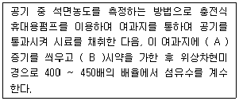
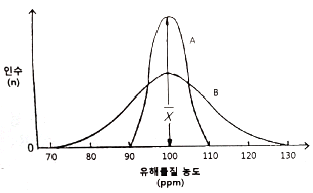
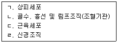
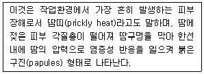
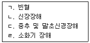
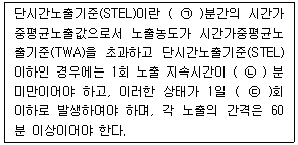
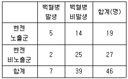

산업위생관리기사 (2021-05-15 기출문제)
1과목: 산업위생학개론
1. 다음 중 최초로 기록된 직업병은?
- 규폐증
- 폐질환
- 음낭암
- 납중독
(정답률: 73%)

2. 근골격계질환에 관한 설명으로 옳지 않은 것은?
- 점액낭염(bursitis)은 관절 사이의 윤활액을 싸고 있는 윤활낭에 염증이 생기는 질병이다.
- 건초염(tendosynovitis)은 건막에 염증이 생긴 질환이며, 건염(tendonitis)은 건의 염증으로, 건염과 건초염을 정확히 구분하기 어렵다.
- 수근관 증후군(carpal tunnel syndrome)은 반복적이고, 지속적인 손목의 압박, 무리한 힘 등으로 인해 수근관 내부에 정중신경이 손상되어 발생한다.
- 요추 염좌(lumbar sprain)는 근육이 잘못된 자세, 외부의 충격, 과도한 스트레스 등으로 수축되어 굳어지면 근섬유의 일부가 띠처럼 단단하게 변하여 근육의 특정 부위에 압통, 방사통, 목부위 운동제한, 두통 등의 증상이 나타난다.
(정답률: 65%)
3. 근로자가 노동환경에 노출될 때 유해인자에 대한 해치(Hatch)의 양-반응관계곡선의 기관장해 3단계에 해당하지 않는 것은?
- 보상단계
- 고장단계
- 회복단계
- 항상성 유지단계
(정답률: 50%)
4. 산업피로의 용어에 관한 설명으로 옳지 않은 것은?
- 곤비란 단시간의 휴식으로 회복될 수 있는 피로를 말한다.
- 다음 날까지도 피로상태가 계속되는 것을 과로라 한다.
- 보통 피로는 하룻밤 잠을 자고 나면 다음날 회복되는 정도이다.
- 정신피로는 중추신경계의 피로를 말하는 것으로 정밀작업 등과 같은 정신적 긴장을 요하는 작업시에 발생된다.
(정답률: 85%)
5. 산업안전보건법령에서 정하고 있는 제조 등이 금지되는 유해물질에 해당되지 않는 것은?
- 석면(Asbestos)
- 크롬산 아연(Zinc chromates)
- 황린 성냥(Yellow phosphorus match)
- β-나프틸아민과 그 염(β-Naphthylamine and its salts)
(정답률: 67%)
6. 사무실 공기관리 지침에 관한 내용으로 옳지 않은 것은?(단, 고용노동부 고시를 기준으로 한다.)
- 오염물질인 미세먼지(PM10)의 관리기준은 100μg/m3이다.
- 사무실 공기의 관리기준은 8시간 시간가중평균농도를 기준으로 한다.
- 총부유세균의 시료채취방법은 충돌법을 이용한 부유세균채취기(bioair sampler)로 채취한다.
- 사무실 공기질의 모든 항목에 대한 측정결과는 측정치 전체에 대한 평균값을 이용하여 평가한다.
(정답률: 73%)
7. 산업안전보건법령상 물질안전보건자료 대상물질을 제조ㆍ수입하려는 자가 물질안전보건자료에 기재해야하는 사항에 해당되지 않는 것은? (단, 그 밖에 고용노동부장관이 정하는 사항은 제외한다.)
- 응급조치 요령
- 물리ㆍ화학적 특성
- 안전관리자의 직무범위
- 폭발ㆍ화재 시의 대처방법
(정답률: 86%)
8. 산업안전보건법령상 근로자에 대해 실시하는 특수건강진단 대상 유해인자에 해당되지 않는 것은?
- 에탄올(Ethanol)
- 가솔린(Gasoline)
- 니트로벤젠(Nitrobenzene)
- 디에틸 에테르(Diethyl ether)
(정답률: 59%)
9. 산업피로에 대한 대책으로 옳은 것은?
- 커피, 홍차, 엽차 및 비타민 B1은 피로 회복에 도움이 되므로 공급한다.
- 신체 리듬의 적응을 위하여 야간 근무는 연속으로 7일 이상 실시하도록 한다.
- 움직이는 작업은 피로를 가중시키므로 될수록 정적인 작업으로 전환하도록 한다.
- 피로한 후 장시간 휴식하는 것이 휴식시간을 여러 번으로 나누는 것보다 효과적이다.
(정답률: 76%)
10. 직업성 질환 중 직업상의 업무에 의하여 1차적으로 발생하는 질환은?
- 합병증
- 일반 질환
- 원발성 질환
- 속발성 질환
(정답률: 81%)
11. 재해예방의 4원칙에 해당되지 않는 것은?
- 손실 우연의 원칙
- 예방 가능의 원칙
- 대책 선정의 원칙
- 원인 조사의 원칙
(정답률: 78%)
12. 토양이나 암석 등에 존재하는 우라늄의 자연적 붕괴로 생성되어 건물의 균열을 통해 실내공기로 유입되는 발암성 오염물질은?
- 라돈
- 석면
- 알레르겐
- 포름알데히드
(정답률: 81%)
13. NIOSH에서 제시한 권장무게한계가 6kg이고, 근로자가 실제 작업하는 중량물의 무게가 12kg일 경우 중량물 취급지수(LI)는?
- 0.5
- 1.0
- 2.0
- 6.0
(정답률: 74%)
14. 미국산업위생학술원(American Academy of Industrial Hygiene)에서 산업위생 분야에 종사하는 사람들이 반드시 지켜야 할 윤리강령 중 전문가로서의 책임부분에 해당하지 않는 것은?
- 기업체의 기밀은 누설하지 않는다.
- 근로자의 건강보호 책임을 최우선으로 한다.
- 전문 분야로서의 산업위생을 학문적으로 발전시킨다.
- 과학적 방법의 적용과 자료의 해석에서 객관성을 유지한다.
(정답률: 71%)
15. 근육운동을 하는 동안 혐기성 대사에 동원되는 에너지원과 가장 거리가 먼 것은?
- 글리코겐
- 아세트알데히드
- 크레아틴인산(CP)
- 아데노신삼인산(ATP)
(정답률: 80%)
16. 산업안전보건법령상 중대재해에 해당되지 않는 것은?
- 사망사가 2명이 발생한 재해
- 상해는 없으나 재산피해 정도가 심각한 재해
- 4개월의 용양이 필요한 부상자가 동시에 2명이 발생한 재해
- 부상자 또는 직업성 질병자가 동시에 12명이 발생한 재해
(정답률: 85%)
17. 마이스터(D.Meister)가 정의한 내용으로 시스템으로부터 요구된 작업결과(Performance)와의 차이(Deviation)가 의미하는 것은?
- 인간실수
- 무의식 행동
- 주변적 동작
- 지름길 반응
(정답률: 77%)
18. 작업대사율이 3인 강한작업을 하는 근로자의 실동률(%)은?
- 50
- 60
- 70
- 80
(정답률: 65%)
19. 산업위생활동 중 평가(Evaluation)의 주요과정에 대한 설명으로 옳지 않은 것은?
- 시료를 채취하고 분석한다.
- 예비조사의 목적과 범위를 결정한다.
- 현장조사로 정량적인 유해인자의 양을 측정한다.
- 바람직한 작업환경을 만드는 최정적인 활동이다.
(정답률: 46%)
20. 톨루엔(TLV=50ppm)을 사용하는 작업장의 작업시간이 10시간일 때 허용기준을 보정하여야 한다. OSHA 보정법과 Brief and Scala 보정법을 적용하였을 경우 보정된 허용기준치 간의 차이는?
- 1ppm
- 2.5ppm
- 5ppm
- 10ppm
(정답률: 67%)
2과목: 작업위생측정 및 평가
21. 가스상 물질의 분석 및 평가를 위한 열탈착에 관한 설명으로 틀린 것은?
- 이황화탄소를 활용한 용매 탈착은 독성 및 인화성이 크고 작업이 번잡하여 열탈착이 보다 간편한 방법이다.
- 활성탄관을 이용하여 시료를 채취한 경우, 열탈착에 300℃ 이상의 온도가 필요하므로 사용이 제한된다.
- 열탈착은 용매탈착에 비하여 흡착제에 채취된 일부 분석물질만 기기로 주입되어 감도가 떨어진다.
- 열탈착은 대개 자동으로 수행되며 탈착된 분석물질이 가스크로마토그래피로 직접 주입되도록 되어 있다.
(정답률: 41%)
22. 정량한계에 관한 설명으로 옳은 것은?
- 표준편차의 3배 또는 검출한계의 5배(또는 5.5배)로 정의
- 표준편차의 3배 또는 검출한계의 10배(또는 10.3배)로 정의
- 표준편차의 5배 또는 검출한계의 3배(또는 3.3배)로 정의
- 표준편차의 10배 또는 검출한계의 3배(또는 3.3배)로 정의
(정답률: 64%)
23. 고온의 노출기준을 구분하는 작업강도 중 중등작업에 해당하는 열량(kcal/h)은? (단, 고용노동부 고시를 기준으로 한다.)
- 130
- 221
- 365
- 445
(정답률: 70%)
24. 고열(Heat stress) 환경의 온열 측정과 관련된 내용으로 틀린 것은?
- 흑구온도와 기온과의 차를 실효복사온도라 한다.
- 실제 환경의 복사온도를 평가할 때는 평균복사온도를 이용한다.
- 고열로 인한 환경적인 요인은 기온, 기류, 습도 및 복사열이다.
- 습구흑구온도지수(WBGT) 계산 시에는 반드시 기류를 고려하여야 한다.
(정답률: 70%)
25. 입경범위가 0.1~0.5μm인 입자상 물질이 여과지에 포집될 경우에 관여하는 주된 메커니즘은?
- 충돌과 간섭
- 확산과 간섭
- 확산과 충돌
- 충돌
(정답률: 66%)
26. 노출기준이 1ppm인 acrylonitrile을 0.2L/min 유속으로 3.5L 채취 시 분석범위(working range)는 0.7~46ppm이다. 이 물질의 분석 시 정량한계(mg)는? (단, acrylonitrile의 분자량은 53.06g/mol이다.)
- 2.45
- 4.91
- 5.25
- 10.50
(정답률: 22%)
27. 1% Sodium bisulfite의 흡수액 20mL를 취한 유리제품의 미드젯임핀져를 고속시료포집 펌프에 연결하여 공기시료 0.480m3를 포집하였따. 가시광선흡광광도계를 사용하여 시료를 실험실에서 분석한 값이 표준검량선의 외삽법에 의하여 50μg/mL가 지시되었다. 표준상태에서 시료포집기간동안의 공기 중 포름알데히드 증기의 농도(ppm)는? (단, 포름알데히드 분자량은 30g/mol이다.)
- 1.7
- 2.5
- 3.4
- 4.8
(정답률: 35%)
28. 고체흡착관의 뒷층에서 분석된 양이 앞층의 25%였다. 이에 대한 분석자의 결정으로 바람직하지 않은 것은?
- 파과가 일어났다고 판단하였다.
- 파과실험의 중요성을 인식하였다.
- 시료채취과정에서 오차가 발생되었다고 판단하였다.
- 분석된 앞층과 뒷층을 합하여 분석결과로 이용하였다.
(정답률: 56%)
29. 옥내의 습구흑구온도지수(WBGT)를 계산하는 식으로 옳은 것은?
- WBGT=0.1×자연습구온도+0.9×흑구온도
- WBGT=0.9×자연습구온도+0.1×흑구온도
- WBGT=0.3×자연습구온도+0.7×흑구온도
- WBGT=0.7×자연습구온도+0.3×흑구온도
(정답률: 79%)
30. 활성탄관에 대한 설명으로 틀린 것은?
- 흡착관은 길이 7cm, 외경 6mm인 것을 주로 사용한다.
- 흡입구 방향으로 가장 앞쪽에는 유리섬유가 장착되어 있다.
- 활성탄 입자는 크기가 20~40mesh인 것을 선별하여 사용한다.
- 앞층과 뒷층을 우레탄 폼으로 구분하며 뒷층이 100mg으로 앞층 보다 2배 정도 많다.
(정답률: 59%)
31. 처음 측정한 측정치는 유량, 측정시간, 회수율, 분석에 의한 오차가 각각 15%, 3%, 10%, 7%이였으나 유량에 의한 오차가 개선되어 10%로 감소되었다면 개선 전 측정치의 누적오차와 개선 후 측정치의 누적오차의 차이(%)는?
- 6.5
- 5.5
- 4.5
- 3.5
(정답률: 61%)
32. 산업위생통계에서 적용하는 변이계수에 대한 설명으로 틀린 것은?
- 표준오차에 대한 평균값의 크기를 나타낸 수치이다.
- 통계집단의 측정값들에 대한 균일성, 정밀성 정도를 표현하는 것이다.
- 단위가 서로 다른 집단이나 특성값의 상호 산포도를 비교하는데 이용될 수 있다.
- 평균값의 크기가 0에 가까울수록 변이계수의 의의가 작아지는 단점이 있다.
(정답률: 43%)
33. 누적소음노출량 측정기로 소음을 측정할 때의 기기 설정값으로 옳은 것은? (단, 고용노동부 고시를 기준으로 한다.)
- Threshold = 80dB, Criteria = 90dB, Exchange Rate = 5dB
- Threshold = 80dB, Criteria = 90dB, Exchange Rate = 10dB
- Threshold = 90dB, Criteria = 80dB, Exchange Rate = 10dB
- Threshold = 90dB, Criteria = 80dB, Exchange Rate = 5dB
(정답률: 70%)
34. 석면농도를 측정하는 방법에 대한 설명 중 ( )안에 들어갈 적절한 기체는? (단, NIOSH 방법 기준)

- 솔벤트, 메틸에틸케톤
- 아황산가스, 클로로포름
- 아세톤, 트리아세틴
- 트리클로로에탄, 트리클로로에틸렌
(정답률: 49%)
35. 방사성 물질의 단위에 대한 설명이 잘못된 것은?
- 방사능의 SI단위는 Becquerel(Bq)이다.
- 1Bq는 3.7×1010dps이다.
- 물질에 조사되는 선량은 röntgen(R)으로 표시한다.
- 방사선의 흡수선량은 Gray(Gy)로 표시한다.
(정답률: 49%)
36. 세 개의 소음원의 소음수준을 한 지점에서 각각 측정해보니 첫 번째 소음원만 가동될 때 88dB, 두 번째 소음원만 가동될 때 86dB, 세 번째 소음원만이 가동될 때 91dB이었다. 세 개의 소음원이 동시에 가동될 때 측정 지점에서의 음압수준(dB)은?
- 91.6
- 93.6
- 95.4
- 100.2
(정답률: 69%)
37. 채취시료 10mL를 채취하여 분석한 결과 납(Pb)의 양이 8.5μg이고 Blank 시료도 동일한 방법으로 분석한 결과 납의 양이 0.7μg이다. 총 흡인 유량이 60L일 때 작업환경 중 납의 농도(mg/m3)는? (단, 탈착효율은 0.95이다.)
- 0.14
- 0.21
- 0.65
- 0.70
(정답률: 34%)
38. 작업환경 내 1⑤dB(A)의 소음이 30분, 110dB(A) 소음이 15분, 115dB(A) 5분 발생하였을 때, 작업환경의 소음 정도는? (단, 1⑤, 110, 115dB(A)의 1일 노출허용 시간은 각각 1시간, 30분, 15분이고, 소음은 단속음이다.)
- 허용기준 초과
- 허용기준과 일치
- 허용기준 미만
- 평가할 수 없음(조건부족)
(정답률: 63%)
39. 금속가공유를 사용하는 절단작업 시 주로 발생할 수 있는 공기 중 부유물질의 형태로 가장 적합한 것은?
- 미스트(mist)
- 먼지(dust)
- 가스(gas)
- 흄(fume)
(정답률: 42%)
40. 두 집단의 어떤 유해물질의 측정값이 아래 도표와 같을 때 두 집단의 표준편차의 크기 비교에 대한 설명 중 옳은 것은?

- A집단과 B집단은 서로 같다.
- A집단의 경우가 B집단의 경우보다 크다.
- A집단의 경우가 B집단의 경우보다 작다.
- 주어진 도표만으로 판단하기 어렵다.
(정답률: 68%)
3과목: 작업환경관리대책
41. 다음 중 특급 분리식 방진마스크의 여과재 분진 등의 포집효율은? (단, 고용노동부 고시를 기준으로 한다.)
- 80% 이상
- 94% 이상
- 99.0% 이상
- 99.95% 이상
(정답률: 71%)
42. 방진마스크에 대한 설명으로 가장 거리가 먼 것은?
- 방진마스크의 필터에는 활성탄과 실리카겔이 주로 사용된다.
- 방진마스크는 인체에 유해한 분진, 연무, 흄, 미스트, 스트레이 입자가 작업자가 흡입하지 않도록 하는 보호구이다.
- 방진마스크의 종류에는 격리식과 직결식, 면체여과식이 있다.
- 비휘발성 입자에 대한 보호만 가능하며, 가스 및 증기로부터의 보호는 안 된다.
(정답률: 61%)
43. 지름이 100cm인 원형 후드 입구로부터 200cm 떨어진 지점에 오염물질이 있다. 제어풍속이 3m/s일 때, 후드의 필요 환기량(m3/s)은? (단, 자유공간에 위치하며 플랜지는 없다.)
- 143
- 122
- 103
- 83
(정답률: 56%)
44. 보호구의 재질과 적용 물질에 대한 내용으로 틀린 것은?
- 면: 고체상 물질에 효과적이다.
- 부틸(Butyl) 고무: 극성 용제에 효과적이다.
- 니트릴(Nitrile) 고무: 비극성 용제에 효과적이다.
- 천연 고무(latex): 비극성 용제에 효과적이다.
(정답률: 62%)
45. 국소환기장치 설계에서 제어속도에 대한 설명으로 옳은 것은?
- 작업장 내의 평균유속을 말한다.
- 발산되는 유해물질을 후드로 흡인하는데 필요한 기류속도이다.
- 덕트 내의 기류속도를 말한다.
- 일명 반송속도라고도 한다.
(정답률: 63%)
46. 흡인 풍량이 200m3/min, 송풍기 유효전압이 150mmH2O, 송풍기 효율이 80%인 송풍기의 소요 동력(kW)은?
- 4.1
- 5.1
- 6.1
- 7.1
(정답률: 62%)
47. 덕트 내 공기흐름에서의 레이놀즈수(Reynolds Number)를 계산하기 위해 알아야 하는 모든 요소는?
- 공기속도, 공기점성계수, 공기밀도, 덕트의 직경
- 공기속도, 공기밀도, 중력가속도
- 공기속도, 공기온도, 덕트의 길이
- 공기속도, 공기점성계수, 덕트의 길이
(정답률: 73%)
48. 작업환경관리 대책 중 물질의 대체에 해당되지 않는 것은?
- 성냥을 만들 때 백린을 적린으로 교체한다.
- 보온 재료인 유리섬유를 석면으로 교체한다.
- 야광시계의 자판에 라듐 대신 인을 사용한다.
- 분체 입자를 큰 입자로 대체한다.
(정답률: 68%)
49. 7m×14m×3m의 체적을 가진 방에 톨루엔이 저장되어 있고 공기를 공급하기 전에 측정한 농도가 300ppm이었다. 이 방으로 10m3/min의 환기량을 공급한 후 노출기준인 100ppm으로 도달하는데 걸리는 시간(min)은?
- 12
- 16
- 24
- 32
(정답률: 48%)
50. 후드의 선택에서 필요 환기량을 최소화하기 위한 방법이 아닌 것은?
- 측면 조절판 또는 커텐 등으로 가능한 공정을 둘러 쌀 것
- 후드를 오염원에 가능한 가깝게 설치할 것
- 후드 개구부로 유입되는 기류속도 분포가 균일하게 되도록 할 것
- 공정 중 발생되는 오염물질의 비산속도를 크게할 것
(정답률: 66%)
51. 송풍기의 회전수 변화에 따른 풍량, 풍압 및 동력에 대한 설명으로 옳은 것은?
- 풍량은 송풍기의 회전수에 비례한다.
- 풍압은 송풍기의 회전수에 반비례한다.
- 동력은 송풍기의 회전수에 비례한다.
- 동력은 송풍기 회전수의 제곱에 비례한다.
(정답률: 69%)
52. 1기압에서 혼합기체의 부피비가 질소 71%, 산소 14%, 탄산가스 15%로 구성되어 있을 때, 질소의 분압(mmH2O)은?(오류 신고가 접수된 문제입니다. 반드시 정답과 해설을 확인하시기 바랍니다.)
- 433.2
- 539.6
- 646.0
- 653.6
(정답률: 66%)
53. 공기정화장치의 한 종류인 원심력집진기에서 절단입경의 의미로 옳은 것은?
- 100% 분리 포집되는 입자의 최소 크기
- 100% 처리효율로 제거되는 입자크기
- 90% 이상 처리효율로 제거되는 입자크기
- 50% 처리효율로 제거되는 입자크기
(정답률: 56%)
54. 작업환경개선에서 공학적인 대책과 가장 거리가 먼 것은?
- 교육
- 환기
- 대체
- 격리
(정답률: 71%)
55. 유입계수가 0.82인 원형 후드가 있다. 원형 덕트의 면적이 0.0314m2이고 필요 환기량이 30m3/min이라고 할 때, 후드의 정압(mmH2O)은? (단, 공기밀도는 1.2kg/m3이다.)
- 16
- 23
- 32
- 37
(정답률: 44%)
56. 방사형 송풍기에 관한 설명과 가장 거리가 먼 것은?
- 고농도 분진함유 공기나 부식성이 강한 공기를 이송시키는데 많이 이용된다.
- 깃이 평판으로 되어 있다.
- 가격이 저렴하고 효율이 높다.
- 깃의 구조가 분진을 자체 정화할 수 있도록 되어 있다.
(정답률: 56%)
57. 플랜지 없는 외부식 사각형 후드가 설치되어 있다. 성능을 높이기 위해 플랜지 있는 외부식 사각형 후드로 작업대에 부착했을 때, 필요환기량의 변화로 옳은 것은? (단, 포촉거리, 개구면적, 제어속도는 같다.)
- 기존 대비 10%로 줄어든다.
- 기존 대비 25%로 줄어든다.
- 기존 대비 50%로 줄어든다.
- 기존 대비 75%로 줄어든다.
(정답률: 45%)
58. 50℃의 송풍관에 15m/s의 유속으로 흐르는 기체의 속도압(mmH2O)은? (단, 기체의 밀도는 1.293kg/m3이다.)
- 32.4
- 22.6
- 14.8
- 7.2
(정답률: 48%)
59. 온도 50℃인 기체가 관을 통하여 20m3/min으로 흐르고 있을 때, 같은 조건의 0℃에서 유량(m3/min)은? (단, 관내압력 및 기타 조건은 일정하다.)
- 14.7
- 16.9
- 20.0
- 23.7
(정답률: 43%)
60. 원심력 송풍기 중 다익형 송풍기에 관한 설명과 가장 거리가 먼 것은?
- 큰 압력손실에서도 송풍량이 안정적이다.
- 송풍기의 임펠러가 다람쥐 쳇바퀴 모양으로 생겼다.
- 강도가 크게 요구되지 않기 때문에 적은 비용으로 제작가능하다.
- 다른 송풍기와 비교하여 동일 송풍량을 발생시키기 위한 임펠러 회전속도가 상대적으로 낮기 때문에 소음이 작다.
(정답률: 46%)
4과목: 물리적유해인자관리
61. 진동증후군(HAVS)에 대한 스톡홀름 워크숍의 분류로서 옳지 않은 것은?
- 진동증후군의 단계를 0부터 4까지 5단계로 구분하였다.
- 1단계는 가벼운 증상으로 1개 또는 그 이상의 손가락 끝부분이 하얗게 변하는 증상을 의미한다.
- 3단계는 심각한 증상으로 1개 또는 그 이상의 손가락 가운뎃마디 부분까지 하얗게 변하는 증상이 나타나는 단계이다.
- 4단계는 매우 심각한 증상을 대부분의 손가락이 하얗게 변하는 증상과 함께 손끝에서 땀의 분비가 제대로 일어나지 않는 등의 변화가 나타나는 단계이다.
(정답률: 65%)
62. 인체와 작업환경과의 사이에 열교환의 영향을 미치는 것으로 가장 거리가 먼 것은?
- 대류(convection)
- 열복사(radiation)
- 증발(evaporation)
- 열순응(acclimatization to heat)
(정답률: 62%)
63. 비전리방사선의 종류 중 옥외작업을 하면서 콜타르의 유도체, 벤조피렌, 안트라센 화합물과 상호작용하여 피부암을 유발시키는 것으로 알려진 비전리방사선은?
- γ선
- 자외선
- 적외선
- 마이크로파
(정답률: 64%)
64. 소독작용, 비타민D형성, 피부색소 침착 등 생물학적 작용이 강한 특성을 가진 자외선(Dorno 선)의 파장 범위는 약 얼마인가?
- 1000Å ~ 2800Å
- 2800Å ~ 3150Å
- 3150Å ~ 4000Å
- 4000Å ~ 4700Å
(정답률: 71%)
65. 전리방사선 중 전자기방사선에 속하는 것은?
- α선
- β선
- γ선
- 중성자
(정답률: 58%)
66. 다음 중 이상기압의 인체작용으로 2차적인 가압현상과 가장 거리가 먼 것은? (단, 화학적 장해를 말한다.)
- 질소 마취
- 산소 중독
- 이산화탄소의 중독
- 일산화탄소의 작용
(정답률: 64%)
67. 출력이 10Watt의 작은 점음원으로부터 자유공간의 10m 떨어져 있는 곳의 음압레벨(Sound Pressure Level)은 몇 dB정도인가?
- 89
- 99
- 161
- 229
(정답률: 59%)
68. 1 sone이란 몇 Hz에서, 몇 dB의 음압레벨을 갖는 소음의 크기를 말하는가?
- 1000Hz, 40dB
- 1200Hz, 45dB
- 1500Hz, 45dB
- 2000Hz, 48dB
(정답률: 64%)
69. 자연조명에 관한 설명으로 옳지 않은 것은?
- 창의 면적은 바닥 면적의 15 ~ 20%정도가 이상적이다.
- 개각은 4 ~ 5°가 좋으며, 개각이 작을수록 실내는 밝다.
- 균일한 조명을 요구하는 작업실은 동북 또는 북창이 좋다.
- 입사각은 28°이상이 좋으며, 입사각이 클수록 실내는 밝다.
(정답률: 62%)
70. 전신진동 노출에 따른 인체의 영향에 대한 설명으로 옳지 않은 것은?
- 평형감각에 영향을 미친다.
- 산소 소비량과 폐환기량이 증가한다.
- 작업수행 능력과 집중력이 저하된다.
- 저속노출 시 레이노드 증후군(Raynaud’s phenomenon)을 유발한다.
(정답률: 62%)
71. 소음에 의한 인체의 장해 정도(소음성난청)에 영향을 미치는 요인이 아닌 것은?
- 소음의 크기
- 개인의 감수성
- 소음 발생 장소
- 소음의 주파수 구성
(정답률: 64%)
72. 다음 중 전리방사선에 대한 감수성의 크기를 올바른 순서대로 나열한 것은?

- ㄱ ＞ ㄴ ＞ ㄷ ＞ ㄹ
- ㄱ ＞ ㄹ ＞ ㄴ ＞ ㄷ
- ㄴ ＞ ㄱ ＞ ㄷ ＞ ㄹ
- ㄴ ＞ ㄷ ＞ ㄹ ＞ ㄱ
(정답률: 64%)
73. 한랭 환경에서 인체의 일차적 생리적 반응으로 볼 수 없는 것은?
- 피부혈관의 팽창
- 체표면적의 감소
- 화학적 대사작용의 증가
- 근육긴장의 증가와 ᄄᅠᆯ림
(정답률: 61%)
74. 10시간 동안 측정한 누적 소음노출량이 300%일 때 측정시간 평균 소음 수준은 약 얼마인가?
- 94.2dB(A)
- 96.3dB(A)
- 97.4dB(A)
- 98.6dB(A)
(정답률: 50%)
75. 감압에 따른 인체의 기포 형성량을 좌우하는 요인과 가장 거리가 먼 것은?
- 감압속도
- 산소공급량
- 조직에 용해된 가스량
- 혈류를 변화시키는 상태
(정답률: 50%)
76. 다음에서 설명하는 고열장해는?

- 열사병(heat stroke)
- 열 허탈(heat collapse)
- 열 경련(heat cramps)
- 열 발진(heat rashes)
(정답률: 71%)
77. 소음의 흡음 평가 시 적용되는 반향시간(reverberation time)에 관한 설명으로 옳은 것은?
- 반향시간은 실내공간의 크기에 비례한다.
- 실내 흡음량을 증가시키면 반향시간도 증가한다.
- 반향시간은 음압수준이 30dB 감소하는데 소요되는 시간이다.
- 반향시간을 측정하려면 실내 배경소음이 90dB 이상 되어야 한다.
(정답률: 49%)
78. 1촉광의 광원으로부터 한 단위 입체각으로 나가는 광속의 단위를 무엇이라 하는가?
- 럭스(Lux)
- 램버트(Lambert)
- 캔들(Candle)
- 루멘(Lumen)
(정답률: 52%)
79. 밀폐공간에서 산소결핍의 원인을 소모(consumption), 치환(displacement), 흡수(absorption)로 구분할 때 소모에 해당하지 않는 것은?
- 용접, 절단, 불 등에 의한 연소
- 금속의 산화, 녹 등의 화학반응
- 제한된 공간 내에서 사람의 호흡
- 질소, 아르곤, 헬륨 등의 불활성 가스 사용
(정답률: 59%)
80. 산업안전보건법령상 이상기압에 의한 건강장해의 예방에 있어 사용되는 용어의 정의로 옳지 않은 것은?
- 압력이란 절대압과 게이지압의 합을 말한다.
- 고압작업이란 고기압에서 잠함공법이나 그 외의 압기공법으로 하는 작업을 말한다.
- 기압조절실이란 고압작업을 하는 근로자 또는 잠수작업을 하는 근로자가 가압 또는 감압을 받는 장소를 말한다.
- 표면공급식 잠수작업이란 수면 위의 공기압축기 또는 호흡용 기체통에서 압축된 호흡용 기체를 공급받으면서 하는 작업을 말한다.
(정답률: 61%)
5과목: 산업독성학
81. 건강영향에 따른 분진의 분류와 유발물질의 종류를 잘못 짝지은 것은?
- 유기성 분진 – 목분진, 면, 밀가루
- 알레르기성 분진 – 크롬산, 망간, 황
- 진폐성 분진 – 규산, 석면, 활석, 흑연
- 발암성 분진 – 석면, 니켈카보닐, 아민계 색소
(정답률: 68%)
82. 다음 중 칼슘대사에 장해를 주어 신결석을 동반한 신증후군이 나타나고 다량의 칼슘배설이 일어나 뼈의 통증, 골연화증 및 골수공증과 같은 골격계 장해를 유발하는 중금속은?
- 망간
- 수은
- 비소
- 카드뮴
(정답률: 56%)
83. 폐에 침착된 먼지의 정화과정에 대한 설명으로 옳지 않은 것은?
- 어떤 먼지는 폐포벽을 통과하여 림프계나 다른 부위로 들어가기도 한다.
- 먼지는 세포가 방출하는 효소에 의해 용해되지 않으므로 점액층에 의한 방출 이외에는 체내에 축적된다.
- 폐에 침착된 먼지는 식세포에 의하여 포위되어, 포위된 먼지의 일부는 미세 기관지로 운반되고 점액 섬모운동에 의하여 정화된다.
- 폐에서 먼지를 포위하는 식세포는 수명이 다한 후 사멸하고 다시 새로운 식세포가 먼지를 포위하는 과정이 계속적으로 일어난다.
(정답률: 57%)
84. 카드뮴이 체내에 흡수되었을 경우 주로 축적되는 곳은?
- 뼈, 근육
- 뇌, 근육
- 간, 신장
- 혈액, 모발
(정답률: 66%)
85. 생물학적 모니터링(biological monitoring)에 관한 설명으로 옳지 않은 것은?
- 주목적은 근로자 채용 시기를 조정하기 위하여 실시한다.
- 건강에 영향을 미치는 바람직하지 않은 노출상태를 파악하는 것이다.
- 최근의 노출량이나 과거로부터 축적된 노출량을 파악한다.
- 건강상의 위험은 생물학적 검체에서 물질별 결정인자를 생물학적 노출지수와 비교하여 평가된다.
(정답률: 68%)
86. 흡입분진의 종류에 따른 진폐증의 분류 중 유기성 분진에 의한 진폐증에 해당하는 것은?
- 규폐증
- 활석폐증
- 연초폐증
- 석면폐증
(정답률: 54%)
87. 다음 중 중추신경의 자극작용이 가장 강한 유기용제는?
- 아민
- 알코올
- 알칸
- 알데히드
(정답률: 43%)
88. 화학물질의 상호작용인 길항작용 중 독성물질의 생체과정인 흡수, 대사 등에 변화를 일으켜 독성이 감소되는 것을 무엇이라 하는가?
- 화학적 길항작용
- 배분적 길항작용
- 수용체 길항작용
- 기능적 길항작용
(정답률: 55%)
89. 직업성 천식에 관한 설명으로 옳지 않은 것은?
- 작업 환경 중 천식을 유발하는 대표물질로 톨루엔 디이소시안산염(TDI), 무수 트리멜리트산(TMA)이 있다.
- 일단 질환에 이환하게 되면 작업 환경에서 추후 소량의 동일한 유발물질에 노출되더라도 지속적으로 증상이 발현된다.
- 항원공여세포가 탐식되면 T림프구 중 I형 T림프구(type I killer T cell)가 특정 알레르기 항원을 인식한다.
- 직업성 천식은 근무시간에 증상이 점점 심해지고, 휴일 같은 비근무시간에 증상이 완화되거나 없어지는 특징이 있다.
(정답률: 57%)
90. 다음 중 납중독에서 나타날 수 있는 증상을 모두 나열한 것은?

- ㄱ, ㄷ
- ㄴ, ㄹ
- ㄱ, ㄴ, ㄷ
- ㄱ, ㄴ, ㄷ, ㄹ
(정답률: 63%)
91. 이황화탄소를 취급하는 근로자를 대상으로 생물학적 모니터링을 하는데 이용될 수 있는 생체 내 대사산물은?
- 소변 중 마뇨산
- 소변 중 메탄올
- 소변 중 메틸마뇨산
- 소변 중 TTCA(2-thiothiazolidine-4-carboxylic acid)
(정답률: 64%)
92. 산업안전보건법령상 다음의 설명에서 ㉠~㉢에 해당하는 내용으로 옳은 것은?

- ㉠:15, ㉡:20, ㉢:2
- ㉠:20, ㉡:15, ㉢:2
- ㉠:15, ㉡:15, ㉢:4
- ㉠:20, ㉡:20, ㉢:4
(정답률: 70%)
93. 사염화탄소에 관한 설명으로 옳지 않은 것은?
- 생식기에 대한 독성작용이 특히 심하다.
- 고농도에 노출되면 중추신경계 장애 외에 간장과 신장장애를 유발한다.
- 신장장애 증상으로 감뇨, 혈노 등이 발생하며, 완전 무뇨증이 되면 사망할 수도 있다.
- 초기 증상으로는 지속적인 두통, 구역 또는 구토, 복부선통과 설사, 간압통 등이 나타난다.
(정답률: 52%)
94. 단순 질식제에 해당되는 물질은?
- 아닐린
- 황화수소
- 이산화탄소
- 니트로벤젠
(정답률: 62%)
95. 상기도 점막 자극제로 볼 수 없는 것은?
- 포스겐
- 크롬산
- 암모니아
- 염화수소
(정답률: 48%)
96. 적혈구의 산소운반 단백질을 무엇이라 하는가?
- 백혈구
- 단구
- 혈소판
- 헤모글로빈
(정답률: 75%)
97. 할로겐화탄화수소에 관한 설명으로 옳지 않은 것은?
- 대개 중추신경계의 억제에 의한 마취작용이 나타난다.
- 가연성과 폭발의 위험성이 높으므로 취급시 주의하여야 한다.
- 일반적으로 할로겐화탄화수소의 독성 정도는 화합물의 분자량이 커질수록 증가한다.
- 일반적으로 할로겐화탄화수소의 독성 정도는 할로겐원소의 수가 커질수록 증가한다.
(정답률: 49%)
98. 다음 표는 A작업장의 백혈병과 벤젠에 대한 코호트 연구를 수행한 결과이다. 이 때 벤젠의 백혈병에 대한 상대위험비는 약 얼마인가?

- 3.29
- 3.55
- 4.64
- 4.82
(정답률: 55%)
99. 다음 중 중절모자를 만드는 사람들에게 처음으로 발견되어 hatter’s shake라고 하며 근육경련을 유발하는 중금속은?
- 카드뮴
- 수은
- 망간
- 납
(정답률: 53%)
100. 유기용제별 중독의 대표적인 증상으로 올바르게 연결된 것은?
- 벤젠 - 간장해
- 크실렌 - 조혈장해
- 염화탄화수소 - 시신경장해
- 에틸렌글리콜에테르 – 생식기능장해
(정답률: 40%)